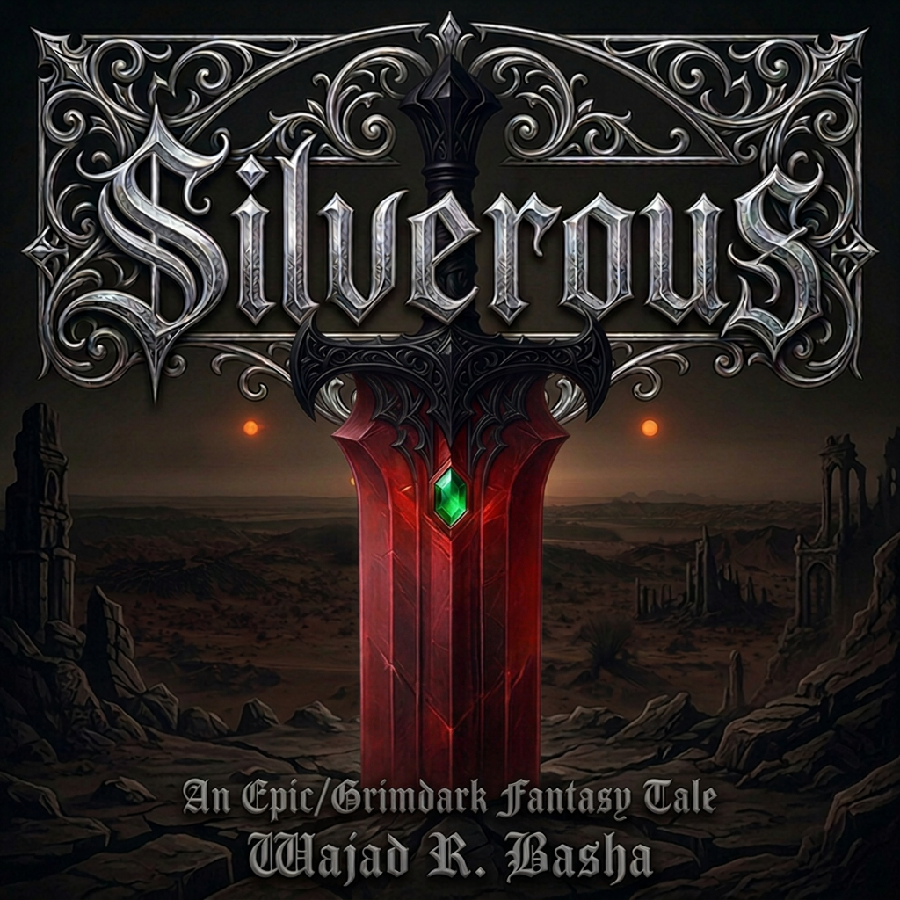

A provisional cover of the novel made with AI; the actual one will feature a real artist.
Silverous
Under three ruthless suns, humans rule the world of Nibiru; but when Nightfall comes, darkness is more than the absence of light.
About the novel:
Silverous, a young and ruthless leader of the Undying, a mysterious silver-skinned race that thrives beneath the Nightfall, is determined to build a kingdom. Valda, an elven woman with a fierce will of her own, has her own reasons for joining him.
Bound together by necessity, surrounded by ancient magic, Bloodiron, powerful gemstones, and enemies on every side, the two must learn to survive one another before they can survive the world around them.
But when power, vengeance and desire begin to intertwine, neither of them may remain the person they thought they were.
Publication plans:
Silverous is an epic/grimdark novel with a romantic subplot in which characters explore their identities beyond their powers. Wajad has been working on this novel for a few months and hopes to publish it in late 2027.
Stay tuned for updates!
← Back to Home